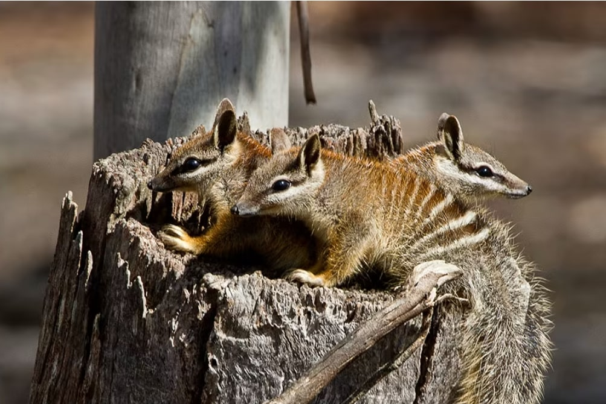
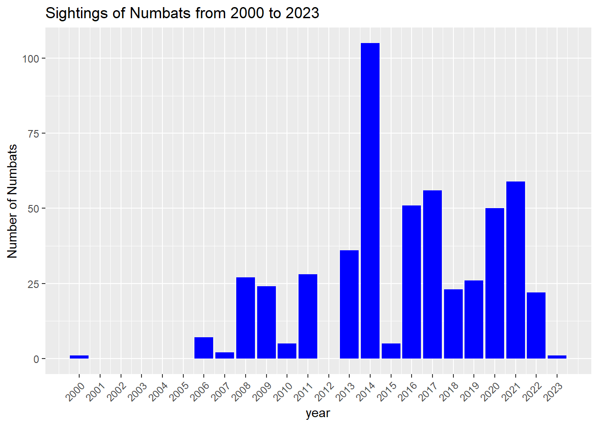
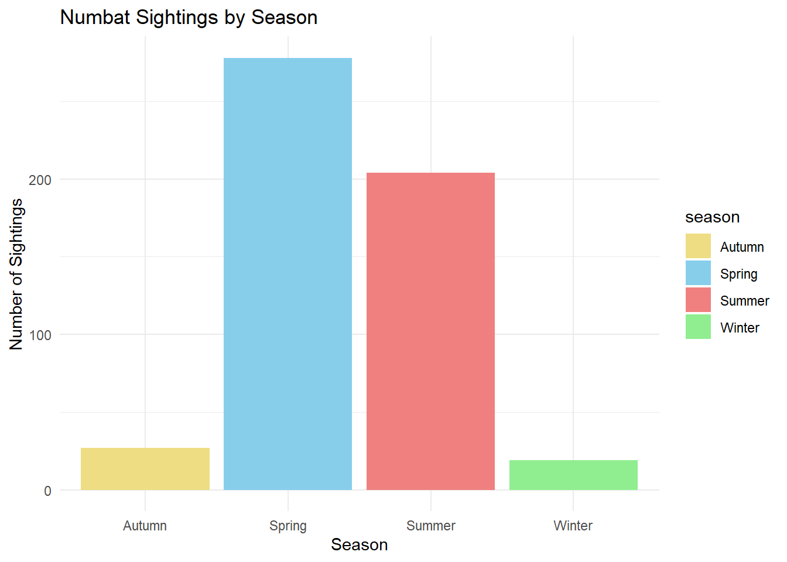

aus_stations <- ghcnd_stations() |>
filter(str_starts(id, "ASN")) |>
filter(last_year >= 2020) |>
mutate(wmo_id = as.numeric(wmo_id),
name = str_to_lower(name)) |>
select(-state, -gsn_flag) |>
filter(element %in% c("PRCP", "TMAX", "TMIN")) |>
nest(element: last_year) |>
rowwise() |>
filter(nrow(data) == 3) |>
select(-data)Problem Description
The numbat (Myrmecobius fasciatus) is a small, termite-eating marsupial native to Australia, currently classified as endangered. Once widespread across the country, numbats are now confined to small, isolated areas of eucalypt woodlands due to habitat destruction, predation by invasive species, and environmental changes. Today, fewer than 1,000 numbats remain in the wild, with sightings concentrated mainly in southwestern Australia.
This report focuses on analyzing numbat population trends and sightings between 2000 and 2023, including their geographical distribution and seasonal activity patterns. By examining these trends, we aim to provide insights that will support ongoing conservation efforts to protect this unique species..

Data Description
The data used in this report was obtained from the TidyTuesday (tidytuseday 2023) project, which is a weekly data sharing initiative that provides datasets for analysis and learning. The specific dataset used in this analysis was focused on the numbat population and was accessed via the TidyTuesday GitHub repository.
We named the data set as numbats has 805 observations and 16 variables. The numbats dataset contains observations of Numbat sightings and related environmental data. Key variables include the latitude and longitude coordinates of each sighting, as well as the date and time of the observation. The scientific name of the species observed is recorded, along with a taxon concept identifier for the species. Each sighting is uniquely identified by a record ID, and the data source responsible for the information is noted. The dataset also includes temporal information such as the year, month, day of the week, and hour of each observation. Furthermore, environmental data such as precipitation, maximum temperature, and minimum temperature on the sighting day are provided. Lastly, the dataset records whether the observation took place in Dryandra Woodland.Below ?@tbl-dictionary is the glimpse of our data set
We also took data from the Global Historical Climatology Network Daily (GHCND) using the ghcnd_stations() function. The dataset was filtered for Australian stations (ID starting with “ASN”). The dataset consists of 643 observations and 6 variables and was named aus_stations. and includes key variables such as the latitude and longitude coordinates, elevation, station name, station id and WMO ID.
The variables in the dataset include the station IDs, which identify each Australian station, and the latitude and longitude values that provide the geographic location of the station. The elevation variable records the height of the station above sea level in meters, while the station name provides a label for the station. Lastly, the WMO ID is the numeric identifier assigned to each station by the World Meteorological Organization.
The data cleaning process began by filtering out records from zoo and museum sources to ensure the dataset focuses exclusively on natural numbat sightings. This was achieved using the filter() function with the condition !(dataResourceName %in% c(…)), where I listed specific museums and institutional providers. By excluding these sources, I ensured that only natural sightings are included.In addition, I filtered out rows with missing values in the year column and restricted the dataset to records from the year 2000 onwards using !is.na(year) and year >= 2000. This step ensured that the dataset is focused on the relevant time frame for the analysis.Finally, I removed irrelevant columns that were not needed for this analysis, including dryandra, prcp (precipitation), tmax (maximum temperature), and tmin (minimum temperature), to streamline the dataset and keep only the necessary information for further analysis.
After cleaning the dataset, the dataResourceName variable contains the following (Table 1) categories of data sources. The table below also includes the total number of sightings recorded by each source, reflecting only natural sightings that occurred in Australia between 2000 and 2023.
| dataResourceName | total_sightings |
|---|---|
| ALA species sightings and OzAtlas | 1 |
| Earth Guardians Weekly Feed | 2 |
| Encyclopedia of Life Images - Flickr Group | 2 |
| NSW BioNet Atlas | 198 |
| SA Fauna (BDBSA) | 258 |
| iNaturalist Australia | 67 |
Analysis
Part 1: Numbats Sighting Locations: A Geographic Overview
First, we examine the distribution of Numbat sightings across Australia, which provides insight into the regions where these sightings are most frequent. By understanding the locations of these sightings, we can identify potential habitats, key areas for conservation focus, and regions where Numbat populations may be thriving or facing challenges. A map is an ideal tool to visualize the geographic spread of Numbats, making the data more accessible and easier to interpret.

Figure 1 highlights the locations of Numbat sightings, with blue dots representing the recorded sightings. These sightings are primarily concentrated in the southern and western parts of Australia, with a particularly dense cluster in the southwest region of Western Australia. This visualization is useful for assessing the spatial distribution of Numbats and identifying conservation hotspots. By analyzing these patterns, conservationists and researchers can gain valuable insights into where efforts might be focused to protect this endangered species.
This map serves as a foundation for further research into environmental factors, such as climate and habitat type, that might be influencing the distribution of Numbats. Ultimately, this visualization is a crucial tool in understanding how to manage and protect the Numbat population in Australia.
Part 2: Numbats Population Trends Between 2000 and 2023
Now we concentrate on the trend of Numbat sightings between 2000 and 2023, which offers a glimpse into the population dynamics and sighting frequency of Numbats over time. This Figure 2 provides valuable insight into how the number of sightings has fluctuated across different years.

The data shows that sightings were minimal in the early 2000s, with a sharp increase starting in 2007. A significant spike occurred in 2014, where the number of recorded sightings peaked dramatically, far surpassing other years. This surge could be due to increased observation efforts, improved reporting mechanisms, or possibly environmental factors that led to a temporary rise in Numbat visibility. Following this spike, the number of sightings fluctuated but remained relatively stable between 2015 and 2023, though never reaching the heights seen in 2014. These fluctuations could indicate changing environmental conditions, habitat loss, or other challenges affecting the Numbat population.
It’s important to note that there are missing values for the years 2001 to 2005 and 2012, during which no sightings were recorded. This gap in the data may suggest a lack of reporting or data collection during those years, which leaves some uncertainty in understanding the Numbat population trend during those periods.
Part 3:Seasonal Patterns of Numbat Sightings: Best Times for Observation and Conservation
Continuing from the previous section, where we explored the trend of Numbat sightings between 2000 and 2023, we now turn our attention to the seasonal trends in sightings. This section compares the sightings across different seasons, aiming to uncover patterns in Numbat activity throughout the year. Understanding these seasonal trends is crucial for conservation efforts and for researchers interested in the behaviors of Numbats in their natural habitats.

Figure 3 shows the number of Numbat sightings across the four seasons. Spring has the highest number of sightings, likely due to favorable conditions such as mild temperatures and abundant food. Summer follows, while Winter records the fewest sightings, suggesting reduced Numbat activity during the colder months.
For both visitors and researchers, Spring and Summer offer the best chances to observe Numbats in the wild. Tourists visiting during these months are more likely to witness Numbat activity, making it an ideal time for wildlife enthusiasts. This seasonal pattern also provides key insights for conservation efforts, helping to focus research and fieldwork when Numbats are more active and visible. Further research during the colder months could provide a better understanding of their habitat use and behavior, improving strategies for conservation and public engagement.
References
tidytuseday. 2023. GitHub. https://github.com/rfordatascience/tidytuesday/blob/master/data/2023/2023-03-07/readme.md.